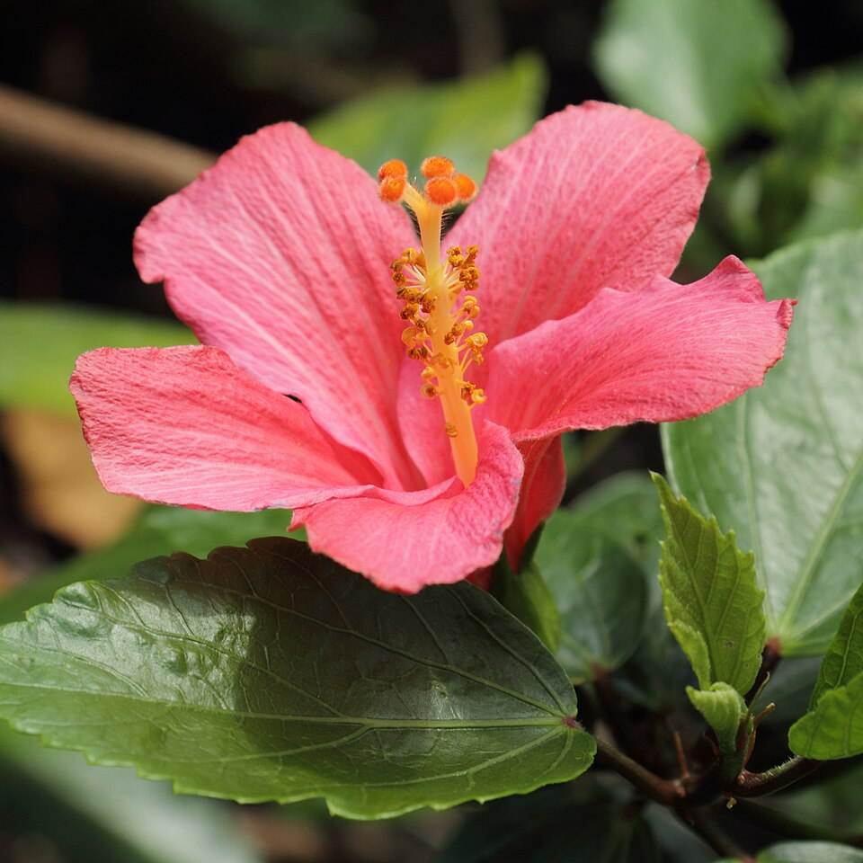

"L'Hibiscus fragilis, plus connu sous le nom de Mandrinette, est une fleur d'une beauté fragile qui semble tout droit sortie d'une aquarelle. Originaire des pentes escarpées de l'île Maurice, cette plante appartient à la famille des Malvacées, tout comme les hibiscus de nos jardins, mais elle possède une aura bien plus mystérieuse. Ses pétales d'un rouge vif ou d'un rose profond se déploient avec une finesse remarquable, entourant un long pistil gracieux. Ce qui la rend si spéciale, au-delà de son apparence, c'est sa rareté extrême : elle est aujourd'hui considérée comme l'une des espèces les plus menacées au monde."
«Observer une Mandrinette en fleurs, c’est contempler la résilience de la nature dans ce qu’elle a de plus délicat. »
Pourquoi l'aimer ?
- Son élégance sauvage : Contrairement aux variétés hybrides, elle garde un aspect naturel et épuré
- Sa symbolique : Elle représente la fragilité de notre écosystème et la nécessité de protéger les beautés uniques de notre planète.
- Ses nuances : Son rose intense s'harmonise parfaitement avec des palettes de couleurs douces et poudrées.